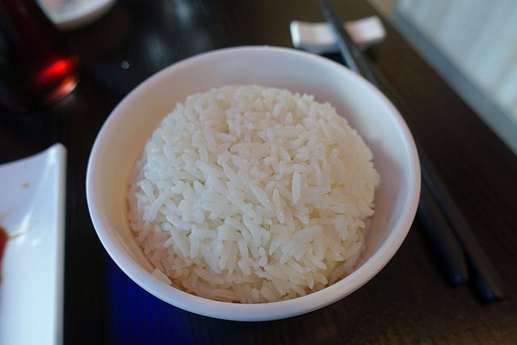

Rice Recipe

The finished dish - Boiled Rice!
Ingredients
- 1/2 cup of sushi rice
- 1 cup of water
Steps
- Place 1/2 of sushi rice in a mesh strainer under running water until the resulting liquid is clear.
- In a pot, bring 1 cup of water to a boil.
- Add the rice, stir, and then lower heat to low.
- Cover the pot, and let cook for 18 minutes.
- Let stand for 5 minutes -while keeping the pot covered-.
- Fluff with a fork and serve.
Back to Main Recipes Page